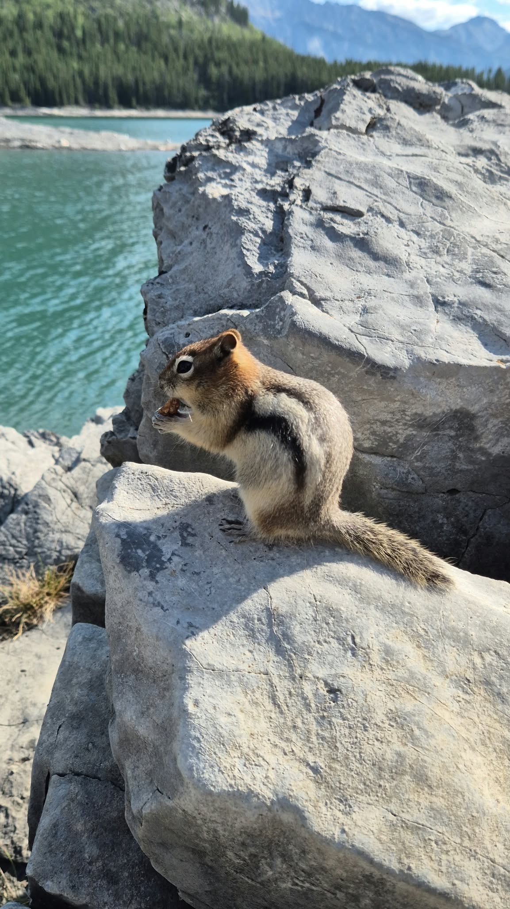

Relevant Experience
Institute for Minimal Access Surgical Sciences
St. Boniface General Hospital
- Conducting multimodal research involving eye-hand tracking and facial expression data from surgical simulation studies.
- Managing and cleaning research datasets, performing exploratory analysis and literature review, maintaining the lab website, and providing computational support.
Digital Weeds Lab, University of Manitoba
- Researched AI for plant science with a focus on crop and weed semantic segmentation.
- Performed manual image segmentation in QGIS for dataset annotation, exploratory analysis, literature review, and computer vision tasks.
PASSIO Lab, North Carolina A&T State University
- Researching AI in healthcare with a focus on cardiology applications.
- Investigated ECG signal analysis through feature extraction and selection, dimensionality reduction, unsupervised clustering, and disease phenotype modeling.
- Developed and evaluated self-supervised learning and fine-tuning approaches for ECG foundation models, using explainable AI for clinical interpretability.
- Contributed one first-author accepted paper at CAI 2026, with further research in progress.
Database and Data Mining Lab, University of Manitoba
- Collaborated on breast cancer detection from mammogram scans and LLM quantization for improved memory efficiency and inference performance.
- Processed 55,000 mammogram scans from 12,000 patients with severe class imbalance, applying preprocessing, multimodal and multitask learning, and imbalance-handling strategies.
- Compared five CNN and Transformer backbones, including ResNet-50 and ViT, with up to 86 million parameters. Ablation studies covered external datasets, modality configurations, and imbalance-handling methods, achieving 71% balanced accuracy, one percentage point above the referenced benchmark.
- Quantized six Hugging Face LLMs using C-based scripts for weight extraction and compared dequantized weight statistics against base models.
Linagora Vietnam
- Developed frontend features for Twake Calendar using TypeScript and React in an open-source codebase.
- Collaborated across Java, JavaScript, DevOps, QA, and Mobile Flutter teams on product workflows and consistent cross-platform behaviour.
